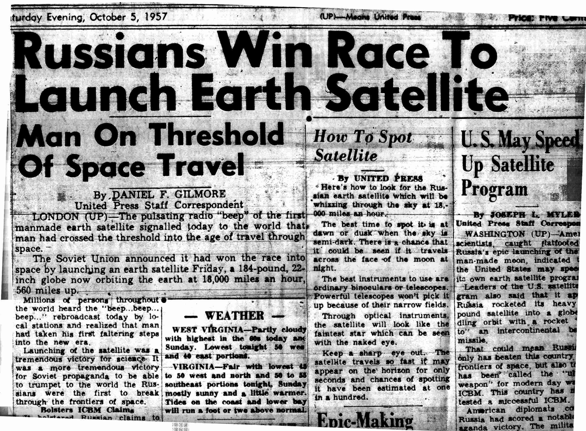

Dwight Eisenhower - American politician and Army general who served as the 34th presidant of the United Staes from 1953 to 1961.
Sputnik the first artificial sattelite launched into space.


ARPA - (Advanced Research Project Agency) later DARPA (Defense)


"The Internet as we know it really got started in the early 1960s. That was when J.C.R. Licklider — a computer scientist with technology company Bolt, Beranek and Newman (BBN) — formulated a few unique ideas about global networking in a series of memos, describing an "Intergalactic Computer Network.
His idea: link computers together across the globe; and anybody near a computer could share information. As it turns out, Licklider had the right idea at the right time. The Cold War had the United States searching for a communication network that could survive a nuclear attack."
Quote taken from LiveScience.com"

Tim Berners-Lee developed the first HTML (Hypertest Markup Language) in 1989

(Published text has always been marked up so that the author and publisher would be able to synchronizeand layout a publication the way it has been envisioned. TBL created a markup language that tells a web browser how to visually displ;ay a page the way the "author" envisioned it.)

Marc Andereessen added an image tage to HTML and found Netscape - 1993
During the 90's there were browser wars and HTML was becoming fragmented. TBL created The World Wide Web Consortium to maintain HTML standards.

Versions
- HTML 3.2 - 1997
- HTML 4.01 - 1999
- XHMTL 2000
- HTML5 - 2014

There have been many versions of HTML. We are currently in version HTML5 and many people don’t see a sixth one coming any time soon, if ever.